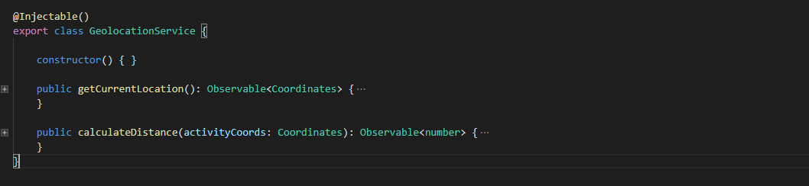

Atter
- 1. Abstract
- 2. Application Architecture
- 2.1 Typescript
- 2.2 FireBase
- 2.3 Atter Framework
- 2.4 Application Architecture
- 2.4.1 Pages
- 2.4.1.1 Activity Page
- 2.4.1.2 Assign Grade Page
- 2.4.1.3 Create New Activity Page
- 2.4.1.4 Dashboard Page
- 2.4.1.5 Follow Activity Page
- 2.4.1.6 Forgot Password Page
- 2.4.1.7 Home Page
- 2.4.1.8 Import Data For Activity Page
- 2.4.1.9 Log Out Page
- 2.4.1.10 Login Page
- 2.4.1.11 Not Found Page
- 2.4.1.12 Profile Page
- 2.4.1.13 Register Page
- 2.4.2 Components
- 2.4.3 Services
- 2.4.4 Models
- 2.4.1 Pages
- 3. Cool things to say?
- 4. Conclusions
Abstract
Atter is a solution aimed at better coordinating any type of activity. An activity owner is able to track any type of check-in, legal ones or frauds, to grade atendees and to give them feedback per check-in.
Application Architecture
At the beginning of development we realised that atter wants to be a fast, easy to use real-time application. We found it would be a lot easier to implement the app if we would just create a framework that would fit its needs. And so along its framework, TypeScript and Firebase, Atter was born.
Typescript
We chose TypeScript over JavaScript for multiple reasons but the most important one is that TypeScript provides an optional type system for JavaScript. Types, in our opinion, increase code readability and lower human error for the simple reason that the compiler catches errors instead of the user at runtime. Further more, types are the best form of documentation that a developer has at its disposal.
Another reason is that TypeScript is a superset of JavaScript and beacuse of that, JavaScript works the same in TypeScript.
Our application relies heavily on the decorators that TypeScript brings, in order to collect metadata and set-up behaviors. We think that is the best approach to this problem that we would have encountered if we would be using JavaScript.
FireBase
Motivation
We chose FireBase because we needed its real-time database feature. By just subscribing to the fields that interest us and trough our framework, we give the user a real-time experience, not having to ever refresh the page.
FireBase Architecture
Our FireBase DataBase is structured in 5 main tables. Our aim was to download as little data as possible per page, in order to have a low response time.
We will detail the most important tables
Activities
An activity is structured in the following way:
We can get everything we need to know, like if we are able to check in, where to check in, the last known position of where the activity took place and the maximum distance that an atendee can check in from.
Check Ins
We group all checkins per activity, and then per event date. We save all frauds and legal checkins and bring them all in the organisers dashboard.
Atter Framework
Atter is made using its own Single-Page Appliation(SPA), built specifically to support its needs. We choose SPA over MPA(Multiple-Page Application) because SPA is fast, more interactive and can provide a more pleasant experience towards its user. It is also easier to develop a serverless application using SPA.
We are following a traditional way of implementing a SPA, but we did some enhancements introducing built-in Dependency Injection system, Component life-cycle Hooks, Style Encapsulation for each component, a DOM renderer, and a template engine that lets us interpolate HTML with JS, greatly reducing the development time and increasing the code readability and reliability
App Starter
This is the start point of our application. The orchestrators and containers are initialised then handlers are assigned to them.
Once everything is complete the component and routing manager will start the process to render the current location.
Application Container
This is the core of our framework. All the information from our decorators goes here and from here all the properties get set up.
Router
Our router can be injected into any page trough our DI system, and then be used trough
the following syntax:
this.router.navigate('page',params)
Following the navigate command, our framework will unload the current page and inject the requested page.
Component Manager
From the component manager we start the handlers of our components. In our case, we only have a header
Other renderables have different managers and will be covered shortly
Routing Manager
The Routing Manager is responsable with calling the correct handlers to render pages when a route is changed, from any action.
Renderable
Renderable is a concept we introduced in our framework. It represents a component or a page which can be rendered. The difference is made trough RenderableMetadata which will be further explained in decorators.
Dependency Injection Container

In the dependecy container we hold metadata about injectables and renderables, and the injectables themselves.
Every injectable is instantiated when needed and then kept here until it's needed again, so it can be used without delay
DOM Processors
Our framework brings three DOM Processors which solve different needs and make app implementing a lot faster. Our processors work by reading the processed DOM before rendering and then adding the necessary event listeners.
We look for data-processor tags and then send the elements in the
respective handlers
Click Processor
Bind Processor
Trough this processor we create One Way Data Binding from HTML to TS code. This allows our forms to be interactive and the code to be easy to read and write, removing any need to write event listeners in page logic.
Submit Processor
Encapsulator
Everytime we go on a page we encapsulate(unless we already did, then we load it) all the
css style and the html with a tag -data__renderable-x
where x is the count of when we reach the specific page, and then we save
it for
further use
Life-Cycle Hooks
Trough Life-Cycle hooks we can set functions to start at different points during the life-cycle of a page. If we want to hook on any of these events we have to implement the requiered interface like so:
Template Engine
Our template engine allows us to interpolate javascript code with html code trough our
custom tags << >>, letting us write very little html code making
development fast and easy
For example:
This portion of code will iterate trough the objects declared in our typescript file and
generate all the needed html. We can get any variable value trough <<=var>>
Decorators
Our framework relies heavily on the use of decorators, using them to collect metadata across our app. Along with reflect-metadata API we get everything we need to know about every class and function inside the app.
The three decorators we use will be detailed below.
Injectable
Our injectable decorator will get the class itself that will be then collected by the application container and then sent to the dependecy container. It is used in the following way:
Once a class is decorated it can be injected anywhere in the app
Renderable
A renderable is differenciated trough the different metadata that we can give to it. We separate a Page and a Component in the following way:
A component can have a selector while a page cannot. The remaining metadata consists of the css and html files, which the framework will start processing to create the final result.
Track Changes
Trough the Track Changes decorator we can add observers on variables and react to any changes that occur over them accordingly. It is used in the following way:
Whenever changes happen, the DOM will react accordingly and re-render.
Application Architecture
Atter is structured in Pages,Compononents and Services
Pages
One of the 3 components that make Atter. This document will detail each page in our application.
Activity Page
This page will react mainly at the change of the following variables:
canCheckIn, activity and checkInData. Where canCheckIn
updates when a teacher sets an activity becomes active, activity holds an
activities data and checkInData holds information about a users frauds and
legal checkins, that will be displayed on the screen.
We use two BehaviourSubjects which we subscribe to firebase with to be notified when a
change happens:activitySubject
and _checkInSubject, and then subscribe to them.
Assign Grade Page
In this page an organiser can grade, or leave feedback to an user.
We take form data trough our data-bind and then update firebase. On succes the organiser will be sent back to his dashboard.
CreateNewActivity Page
In Atter, any user can be an organiser, so everyone is able to create an activity trough a simple form where a name and an activity icon can be selected.
If the activity is successfully created, the user is send back to the dashboard.
Dashboard Page
The Dashboard is the main page from where an organiser can control his activity. This page
will react to every check-in(if allowed)
an user does, trough the help of _checkInSubject which is set to change
everytime a checkin happens.
The organiser can set a maximum checkin distance, from which a checkin is considered legal, or a fraud, and then can enable or disable checkins. Each checkin session will be saved and displayed under the control box, along with graphs and exporting/importing options.
FollowActivity Page
With a follow code, any activity can be added to followed activities
ForgotPassword Page
Home Page
Here a user can see all his dashboards and followed activities.
All data is fetched real-time trough _dashboardsSubject and _followingSubject.
ImportDataForActivity Page
After connecting to dropbox, Atter allows data importing in the following formats: json
and csv. On succes the user is redirected to the dashboard.
For the csv->json conversion we use csvjson.
Logout Page
Login Page
NotFound Page
Profile Page
Inside the Profile Page, users can connect to dropbox or update their personal data.
Register Page
Components
Components are second type of renderables
Header
The header holds our nav bar and our logo. It will refresh on Login/Logout/Register
Services
Trough our dependecy injection system, we can create services that we inject anywhere in the code. They will be covered in this part of the document.
Firebase Services
We separated the way we use FireBase into separate files for better code readability:
Firebase Activities
In this service we have most logic related to an activities management
We inject UserService and FirebaseService to get a reference to the database and the currently logged in user.
getAllActivitiesDetails will return all metadata for requested activities.
For
example to fill in the home page. The data received will contain be an array of data
presented in
activities.
getUserActivities returns all dashboard metadata of an user trough an
observable.
setActivityGradeVisibiliy will set an activity data as private,protected
ur public.
getFollowedActivities will get all activities a user follows and then call
getAllActivitiesDetails.
getStaticActivityDetails will return all metadata of an activity without
listening for changes, trough an observable
getObservableActivityDetails will subscribe to an activity and listen to
it for changes, then update the subject.
Firebase Activity Subscription
checkActivityExistance will check if an activity exists at the specified
ID.
createActivity is responsible with creating an activity with a follow code
from createFollowCode while followActivity will follow one.
createFollowCode
Firebase Authentication
The authentication service will just do basic register, login
and logout actions over accounts.
Firebase Checkin
setUserCheckIn, getUserCheckIn, updateUserCheckIn
area responsible with user checkin logic. They all return an observable with the action
result.
updateActivityFromExternalSource and updateActivityData will
update one activity or more and return an observable with the action result.
getAllCheckins will call getAllCheckIns and return all
checkin data of a certain activity trough an observable.
enableActivityCheckIn will start the process of enabling an activity check
in, it will update the distance and get the current location from prepareCheckInCoordinates
and then update everything
trough prepareCheckInActivityData while disableActivityCheckIn
and prepareActivityDisableCheckIn will do the opposite.
Firebase Initialization
In this service we run the initialisation of the firebase service and from here we inject it into every other dependant firebase service
External Data Service
This service is used to import data and connect, and disconnect from external services
Geolocation Service
getCurrentLocation will return an observable with a coordinates
model
Trough the help of calculateDistance we obtain the distance between two coordinates
User Service
Trough getCurrentUserRealTime we subscribe to a firebase user with a subject
that will get changed when any fields are changed in the database.
getCurrentUserAuthToken will return an observable towards the users uid stored
on firebase.
To update a users profile we use updateValues.
Models
We use models to have bigger control over our functions and for code to be easier to read and mantain.
Checkin Model
The base checkin model we use before we find out if a checkin is legal or not.
Legal Checkin Model
If a checkin is legal we create a legal checkin model and add all the necessary fields for a teacher to grade this checkin.
Illegal CheckIn Model
If a checkin is considered a fraud we only keep the distance from the base checkin model and submit it like that, not being able to grade a fraud.
Activity Model
We use this model to create a new activity